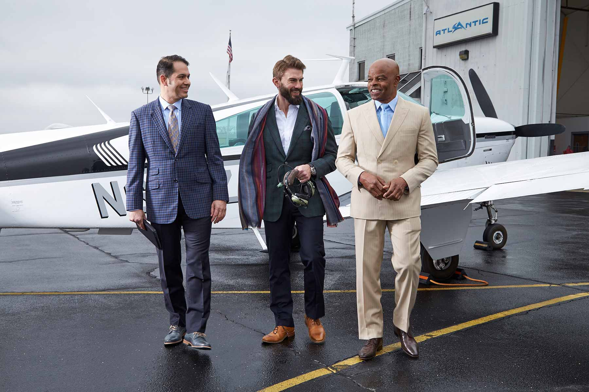

OVER 40 YEARS OF PURVEYING BESPOKE TRADITION IN ALABAMA
be·spoke
/bəˈspōk/
adjective
BRITISH
adjective: bespoke
1. made for a particular customer or user. “a bespoke suit”
2. making or selling bespoke goods, especially clothing. “bespoke
tailors”
The craft of hand-making a suit is both a science and an art with a dash of psychology. The common factor to both these persuasions is the skills of observation and insight. For example, does your customer cross his legs often, does he travel much in their suits, what type of exercise regimen does he pursue, does he run and bike, does he stick his hands in his pant pockets when speaks, how many cell phones does he carry, does he carry a concealed weapon, what is his audience including his coworkers and superiors, and the list goes on.
SHIRTS TO TAILS, WE HAVE YOU COVERED
How can it be made for you as an individual, personal uniqueness and all, if these factors are not taken into consideration? In other words, that would be a made to measure suit.
A bespoke suit is an expression of your individual personality and style. You had a major part in creating it and, when on you, it expresses a message of healthy pride and sophistication that is subtly obvious to people around you.
That’s why the 38 different ways we measure your body are matched by an equal number of ways we guide you to a unique style that fits your personality and your lifestyle.
We are experts in custom tailoring including formal attire.